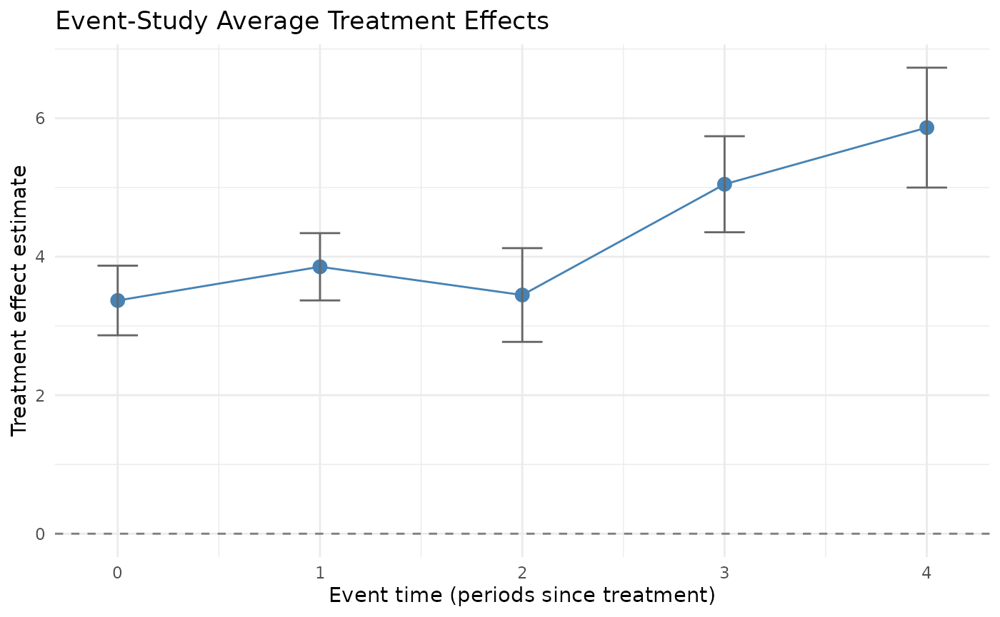
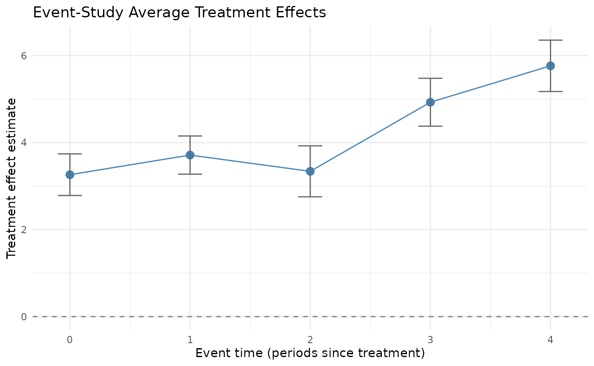

Comparison Estimators: ETWFE and BETWFE
Gregory Faletto
2026-07-18
Source:vignettes/etwfe_betwfe_vignette.Rmd
etwfe_betwfe_vignette.RmdIntroduction
The fetwfe package implements fetwfe() as
its recommended estimator for difference-in-differences with staggered
adoptions. It also exports two related estimators that serve as
comparison baselines:
-
etwfe()— Wooldridge-style extended two-way fixed effects. -
betwfe()— bridge-penalized ETWFE; likefetwfe()but without the fusion transformation.
This vignette demonstrates both, on simulated data so we can compare each estimator against the known true treatment effects.
For background on staggered-adoption DiD and a real-data application
of the recommended fetwfe() estimator, see the main vignette.
For the underlying simulation pipeline used here, see the simulation
vignette. For methodological details, see Faletto (2025).
All three estimators (fetwfe(), etwfe(),
betwfe()) accept the same call signature, so a user
familiar with fetwfe() can drop in etwfe() or
betwfe() simply by changing the function name. Below we use
the *WithSimulatedData() wrappers to keep the simulation
flow concise.
Setup: simulating panel data
We use the genCoefs() + simulateData()
pipeline (the same approach as the simulation vignette). The parameters
below are chosen so that both etwfe() and
betwfe() are well-conditioned: enough cohorts and units
that etwfe() doesn’t run into rank-deficiency, and enough
density in the true coefficient vector that betwfe()’s
bridge regularization shrinks toward zero without zeroing everything
out.
sim_coefs <- genCoefs(
G = 3,
T = 6,
d = 2,
density = 0.5,
eff_size = 2,
seed = 20260510
)
sim_data <- simulateData(
sim_coefs,
N = 120,
sig_eps_sq = 1,
sig_eps_c_sq = 1,
seed = 20260510
)
# True treatment effects (we'll compare estimator output to these):
true_tes <- getTes(sim_coefs)
cat("True overall ATT:", true_tes$att_true, "\n")
#> True overall ATT: 3.877778
print(true_tes$actual_cohort_tes)
#> [1] 4.800000 3.500000 3.333333
etwfe(): extended TWFE without penalty
etwfe() implements the Wooldridge-style extended two-way
fixed effects estimator: cohort-time dummy interactions estimated by
OLS, with no regularization. Under the model’s assumptions it produces
unbiased point estimates and asymptotically exact standard errors. The
trade-off compared to fetwfe() is variance: with no fusion
penalty, the estimator can be high-variance in over-parameterized
regimes, and it errors out entirely when cohorts are small relative to
the number of covariates ((d + 1) units per cohort is the
floor).
res_etwfe <- etwfeWithSimulatedData(sim_data)
summary(res_etwfe)
#> Summary of Extended Two-Way Fixed Effects
#> ========================================
#>
#> Overall ATT: 3.8899 (SE = 0.1791, p = 1.498e-104, 95% CI = [3.5388, 4.2410])
#>
#> CATT (preview) [simultaneous 95% CI]:
#> cohort estimate se ci_low ci_high p_value
#> 2 4.658986 0.2422635 4.083908 5.234063 0
#> 3 3.773047 0.2080983 3.279070 4.267023 0
#> 4 3.104032 0.2240861 2.572104 3.635960 0
#>
#> Event Study (preview) [simultaneous 95% CI]:
#> event_time n_cohorts estimate se ci_low ci_high p_value
#> 0 3 3.368180 0.1994002 2.865330 3.871030 0
#> 1 3 3.855024 0.1926492 3.369199 4.340850 0
#> 2 3 3.447353 0.2684186 2.770452 4.124255 0
#> 3 2 5.046964 0.2749486 4.353595 5.740333 0
#> 4 1 5.864494 0.3432443 4.998895 6.730092 0
#>
#> Model Details:
#> Units (N) : 120
#> Time periods (T) : 6
#> Treated cohorts (G) : 3
#> Covariates (d) : 2
#> Features (p) : 62We can compare the estimated overall ATT to the truth:
betwfe(): bridge-penalized ETWFE
betwfe() extends etwfe() by adding a bridge
(L_q, 0 < q < 1) regularization penalty
on the cohort-time effects. Compared to etwfe(), this
trades a small amount of bias for lower variance — the same idea as
fetwfe(), but without the fusion transformation that
fetwfe() applies. So betwfe() is essentially
“fetwfe minus the fusion.”
res_betwfe <- betwfeWithSimulatedData(sim_data)
summary(res_betwfe)
#> Summary of Bridge-Penalized Extended Two-Way Fixed Effects
#> ==========================================================
#>
#> Overall ATT: 3.7846 (SE = 0.1370, p = 4.325e-168, 95% CI = [3.5162, 4.0530])
#> Selected: TRUE
#>
#> CATT (preview) [simultaneous 95% CI]:
#> cohort estimate se ci_low ci_high p_value selected
#> 2 4.478828 0.1820991 4.044556 4.913100 0 TRUE
#> 3 3.682706 0.1844766 3.242764 4.122648 0 TRUE
#> 4 3.071311 0.2010365 2.591877 3.550745 0 TRUE
#>
#> Event Study (preview) [simultaneous 95% CI]:
#> event_time n_cohorts estimate se ci_low ci_high p_value
#> 0 3 3.261924 0.1874452 2.783997 3.739851 0
#> 1 3 3.712544 0.1722744 3.273298 4.151791 0
#> 2 3 3.339178 0.2297940 2.753274 3.925081 0
#> 3 2 4.926794 0.2158458 4.376454 5.477134 0
#> 4 1 5.763977 0.2314455 5.173862 6.354091 0
#>
#> Model Details:
#> Units (N) : 120
#> Time periods (T) : 6
#> Treated cohorts (G) : 3
#> Covariates (d) : 2
#> Features (p) : 62
#> Selected size : 42
#> Lambda* : 0.0099Comparing against the truth and against etwfe():
cat("True ATT: ", true_tes$att_true, "\n")
#> True ATT: 3.877778
cat("etwfe() ATT: ", res_etwfe$att_hat, "\n")
#> etwfe() ATT: 3.88994
cat("betwfe() ATT: ", res_betwfe$att_hat, "\n")
#> betwfe() ATT: 3.784618
cat("etwfe sq. error: ", (res_etwfe$att_hat - true_tes$att_true)^2, "\n")
#> etwfe sq. error: 0.0001479292
cat("betwfe sq. error:", (res_betwfe$att_hat - true_tes$att_true)^2, "\n")
#> betwfe sq. error: 0.008678791The bridge penalty in betwfe() shrinks the estimate
toward zero relative to etwfe(). On this regime, that
produces a noticeable bias — the textbook bias-variance trade-off in
action. In other regimes (sparser true effects, or noisier data), the
bias from regularization is more than offset by reduced variance, and
betwfe() outperforms etwfe().
No-covariate setting
The examples above use a panel with d = 2 time-invariant
covariates. The package equally supports the no-covariate case by
passing covs = c() to any estimator (or by generating data
with genCoefs(d = 0, ...)). This section runs the same
simulated regime with no covariates, side-by-side, so a user can see
what etwfe() and fetwfe() look like in the
simpler setting.
sim_coefs_d0 <- genCoefs(
G = 3,
T = 6,
d = 0,
density = 0.5,
eff_size = 2,
seed = 20260510
)
sim_data_d0 <- simulateData(
sim_coefs_d0,
N = 120,
sig_eps_sq = 1,
sig_eps_c_sq = 1,
seed = 20260510
)
true_tes_d0 <- getTes(sim_coefs_d0)
cat("True overall ATT (no covariates):", true_tes_d0$att_true, "\n")
#> True overall ATT (no covariates): 2.866667etwfe() in the no-covariate setting:
res_etwfe_d0 <- etwfeWithSimulatedData(sim_data_d0)
summary(res_etwfe_d0)
#> Summary of Extended Two-Way Fixed Effects
#> ========================================
#>
#> Overall ATT: 2.8106 (SE = 0.2865, p = 1.005e-22, 95% CI = [2.2491, 3.3720])
#>
#> CATT (preview) [simultaneous 95% CI]:
#> cohort estimate se ci_low ci_high p_value
#> 2 1.655517 0.2397239 1.0861471 2.224886 1.465972e-11
#> 3 0.986391 0.2045793 0.5004936 1.472288 4.628248e-06
#> 4 6.007912 0.2204793 5.4842508 6.531574 0.000000e+00
#>
#> Event Study (preview) [simultaneous 95% CI]:
#> event_time n_cohorts estimate se ci_low ci_high p_value
#> 0 3 2.6770252 0.1887347 2.2041868 3.1498635 0.000000e+00
#> 1 3 3.9034009 0.2558687 3.2623713 4.5444304 0.000000e+00
#> 2 3 3.2967194 0.4251658 2.2315487 4.3618900 2.498002e-14
#> 3 2 -0.1374173 0.2425199 -0.7450040 0.4701694 9.671449e-01
#> 4 1 -0.1239275 0.3358938 -0.9654445 0.7175895 9.948357e-01
#>
#> Model Details:
#> Units (N) : 120
#> Time periods (T) : 6
#> Treated cohorts (G) : 3
#> Covariates (d) : 0
#> Features (p) : 20fetwfe() in the no-covariate setting:
res_fetwfe_d0 <- fetwfeWithSimulatedData(sim_data_d0)
summary(res_fetwfe_d0)
#> Summary of Fused Extended Two-Way Fixed Effects
#> ================================================
#>
#> Overall ATT: 2.7531 (SE = 0.2601, p = 3.447e-26, 95% CI = [2.2434, 3.2628])
#> Selected: TRUE
#>
#> CATT (preview) [simultaneous 95% CI]:
#> cohort estimate se ci_low ci_high p_value selected
#> 2 1.548112 0.1638030 1.1597730 1.936450 0.000000e+00 TRUE
#> 3 0.988813 0.1342280 0.6705898 1.307036 4.639622e-13 TRUE
#> 4 5.921231 0.1779633 5.4993218 6.343141 0.000000e+00 TRUE
#>
#> Event Study (preview) [simultaneous 95% CI]:
#> event_time n_cohorts estimate se ci_low ci_high p_value
#> 0 3 2.63084186 0.1606606 2.2309078 3.0307759 0.000000e+00
#> 1 3 3.76084837 0.2143360 3.2272995 4.2943972 0.000000e+00
#> 2 3 3.18888203 0.4106127 2.1667395 4.2110246 1.776357e-14
#> 3 2 -0.08321408 0.1444795 -0.4428683 0.2764402 9.583035e-01
#> 4 1 -0.02332782 0.2025556 -0.5275515 0.4808958 9.999752e-01
#>
#> Model Details:
#> Units (N) : 120
#> Time periods (T) : 6
#> Treated cohorts (G) : 3
#> Covariates (d) : 0
#> Features (p) : 20
#> Selected size : 12
#> Lambda* : 0.0078Side-by-side overall ATT estimates against the truth:
cat("True ATT: ", true_tes_d0$att_true, "\n")
#> True ATT: 2.866667
cat("etwfe() ATT: ", res_etwfe_d0$att_hat, "\n")
#> etwfe() ATT: 2.810574
cat("fetwfe() ATT: ", res_fetwfe_d0$att_hat, "\n")
#> fetwfe() ATT: 2.753112
cat("etwfe sq. error: ", (res_etwfe_d0$att_hat - true_tes_d0$att_true)^2, "\n")
#> etwfe sq. error: 0.003146414
cat("fetwfe sq. error:", (res_fetwfe_d0$att_hat - true_tes_d0$att_true)^2, "\n")
#> fetwfe sq. error: 0.0128947Two qualitative differences to note in the no-covariate regime:
-
Smaller design matrix. Without covariates and their
cohort/time/treatment interactions, the underlying regression has many
fewer columns, so both estimators converge faster and
etwfe()becomes rank-stable at smaller cohort sizes (the(d + 1)-units-per-cohort floor thatetwfe()enforces drops to just one unit per cohort). -
Standard errors typically widen. Covariates that
explain residual variance are absent, so the idiosyncratic-noise
variance
sig_eps_sqenters the SEs without that explanatory cushion. The signal-to-noise ratio on the treatment-effect coefficients drops, which is the trade-off for the simpler model.
The package handles covs = c() end-to-end without any
special-casing on the user’s side: the data-prep pipeline
(prep_for_etwfe_core in R/input_prep.R)
dispatches on d == 0 and skips the covariate-interaction
columns automatically. The same applies to betwfe() and
twfeCovs().
Visualizing event-time effects
Each of the three estimator outputs supports plot()
(which dispatches to a method) and a companion eventStudy()
helper that returns a tidy data frame of pooled-event-time
treatment-effect estimates. The plot is an event study: x-axis is event
time e = t - r (calendar time minus the cohort’s
first-treated time), y-axis is the cohort-weighted average of cell-level
treatment-effect estimates at each event time, with confidence
intervals. Pooling weights are sample-cohort-size weights (matching
did::aggte(type = "dynamic") convention). The variance
combines a regression-coefficient term and a cohort-probability term,
mirroring the package’s existing overall-ATT SE machinery.
Event-time estimates from etwfe():
eventStudy(res_etwfe)
#> event_time n_cohorts estimate se ci_low ci_high p_value
#> 1 0 3 3.368180 0.1994002 2.865330 3.871030 0
#> 2 1 3 3.855024 0.1926492 3.369199 4.340850 0
#> 3 2 3 3.447353 0.2684186 2.770452 4.124255 0
#> 4 3 2 5.046964 0.2749486 4.353595 5.740333 0
#> 5 4 1 5.864494 0.3432443 4.998895 6.730092 0
plot(res_etwfe)
Event-time estimates from betwfe() on the same simulated
panel:
eventStudy(res_betwfe)
#> event_time n_cohorts estimate se ci_low ci_high p_value
#> 1 0 3 3.261924 0.1874452 2.783997 3.739851 0
#> 2 1 3 3.712544 0.1722744 3.273298 4.151791 0
#> 3 2 3 3.339178 0.2297940 2.753274 3.925081 0
#> 4 3 2 4.926794 0.2158458 4.376454 5.477134 0
#> 5 4 1 5.763977 0.2314455 5.173862 6.354091 0
plot(res_betwfe)
eventStudy() returns the underlying data;
plot() returns a ggplot2 object you can further customize.
ggplot2 is in Suggests:, so it must be
installed to use the plot() methods; the estimators
themselves work without it.
A parallel cohortStudy() accessor returns per-cohort ATT
estimates as a tidy data frame (the same information available in
res$catt_df, surfaced through a discoverable function with
its own help page):
cohortStudy(res_etwfe)
#> cohort estimate se ci_low ci_high p_value
#> 1 2 4.658986 0.2422635 4.083908 5.234063 0
#> 2 3 3.773047 0.2080983 3.279070 4.267023 0
#> 3 4 3.104032 0.2240861 2.572104 3.635960 0Both eventStudy() and cohortStudy() support
broom::tidy() via dedicated S3 methods; see the main
fetwfe() vignette for the broom workflow.
When to use which
fetwfe() is the recommended estimator for production
use; etwfe() and betwfe() are useful as
comparisons or as building blocks for understanding what
fetwfe() is doing.
-
fetwfe()— default choice. Combines bridge regularization with the fusion transformation for both bias and variance reduction. See the mainfetwfe()vignette for a real-data application and the simulation vignette for the simulation workflow. -
betwfe()— alternative when you want regularization but not the fusion transformation. Useful for inspecting the effect of fusion alone — comparebetwfe()vs.fetwfe()on the same data and the difference is what fusion adds. -
etwfe()— useful as a baseline. On well-conditioned data it produces unbiased point estimates with valid standard errors. On small or over-parameterized data it can fail with rank-deficient cohort errors, whichfetwfe()’s regularization avoids.
For a real-data application of the recommended estimator, see the
main fetwfe() vignette.
References
- Faletto, G. (2025). Fused Extended Two-Way Fixed Effects for Difference-in-Differences with Staggered Adoptions. arXiv preprint arXiv:2312.05985.
- Wooldridge, J. M. (2021). Two-Way Fixed Effects, the Two-Way Mundlak Regression, and Difference-in-Differences Estimators. SSRN Working Paper No. 3906345.